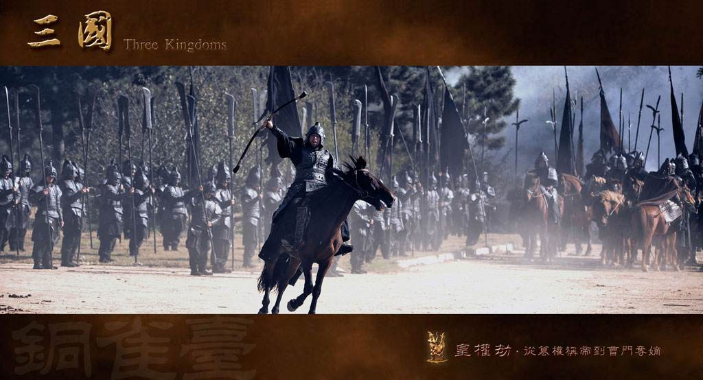

详情页面 猛将！
东汉末年，朝纲混乱。宫廷内部，宦官与外戚的斗争就像凶恶的病魔一般，幼小的皇帝只能作为傀儡

东汉末年，朝纲混乱。宫廷内部，宦官与外戚的斗争就像凶恶的病魔一般，幼小的皇帝只能作为傀儡，而拥兵自重的地方诸侯也在急剧地扩张各自的军事力量。在民间，天灾连年，苛政横行，人民也生活在水深火热之中，延续了四百多年的汉帝国政权岌岌可危。来势汹涌的黄巾军农民起义撼动社稷，虽然起义在爆发后第八个月即告平息，但积重难返的汉帝国却并没有重获生机。为了彻底剿灭宦官势力，出自宦官世家的袁绍（许文广饰）和曹操（陈建斌饰）在混乱中对宦官进行了血腥屠杀，袁绍还召请凉州军阀董卓（吕晓禾饰）进京 帮助进行剿灭宦官。这一“引狼入室”的计划虽然遭到更有智谋的曹操的坚决反对，但袁绍依然一意孤行。

版权所有 © 长跃